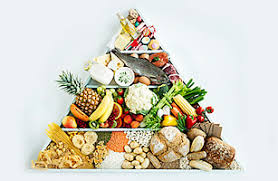
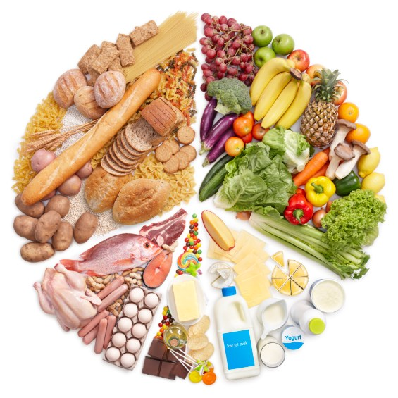
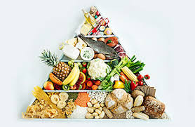
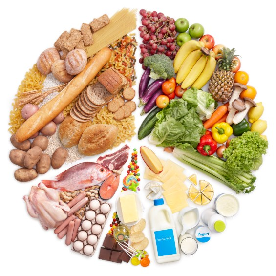

Eating a healthy, balanced diet is one of the most important things you can do to protect your health. In fact, up to 80% of premature heart disease and stroke can be prevented through your life choices and habits, such as eating a healthy diet and being physically active. A healthy diet can help lower your risk of heart disease and stroke by: improving your cholesterol levels reducing your blood pressure helping you manage your body weight controlling your blood sugar.
 


